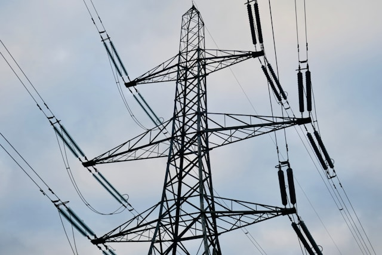

عملية اختراق واسعة تستهدف الشبكة الوطنية للطاقة في اليمن

رصدت وحدة الرصد السيبرانية في الساعات الأولى من صباح يوم 14 يونيو 2025 عملية اختراق واسعة النطاق استهدفت البنية التحتية للشبكة الوطنية للطاقة الكهربائية في اليمن. العملية التي أُطلق عليها تسمية "الطوفان الصامت" تم تنفيذها عبر استغلال ثغرة يوم-صفر غير مُعلنة في بروتوكولات SCADA المستخدمة في أنظمة التحكم الصناعي.
تشير المؤشرات الأولية إلى أن المهاجمين تمكنوا من الوصول إلى واجهات الإدارة عن بُعد لعدد من محطات التحويل الرئيسية، حيث تم رصد محاولات تعديل معلمات التشغيل في محطتين على الأقل.
هذه ليست مجرد عملية اختراق تقليدية — الأنماط التي رصدها الفريق تتوافق مع قدرات مجموعات APT المرتبطة بجهات فاعلة على مستوى دولتية، مع استخدام تقنيات التخفي المتقدمة التي تجعل الاكتشاف المبكر شبه مستحيل عبر أنظمة المراقبة التقليدية.
من أبرز ما كشفه التحليل:
- استخدام بروتوكولات اتصال مشفرة بطبقات متعددة لإخفاء حركة البيانات
- نشر أدوات قابلة للتكيف تُعدَّل تلقائياً حسب بيئة الهدف
- استغلال سلاسل توريد برمجية موثوقة كنقطة دخول أولية
- تنفيذ تقنيات lateral movement لم تُرصد سابقاً في عمليات المنطقة
من خلال تحليل البنية التحتية للهجوم، تم تحديد أن المهاجمين استخدموا سلسلة من المراحل المتدرجة بدءاً من الاستطلاع الأولي للشبكة وصولاً إلى محاولة السيطرة على أنظمة التحكم في محطات التحويل. وقد اعتمدت العملية على تقنيات living-off-the-land مما يجعل رصدها شبه مستحيل عبر أدوات الحماية التقليدية.
تجري حالياً عمليات احتواء معززة بالتنسيق مع الجهات المعنية، مع مواصلة التحليل الجنائي الرقمي لتحديد النطاق الكامل للعملية والبنية التحتية المستخدمة فيها.
ستُنشر تحديثات لاحقة عند توفر معلومات إضافية بعد اكتمال مرحلة الاحتواء الأولية.